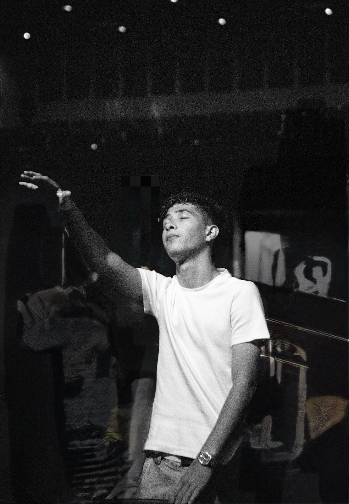
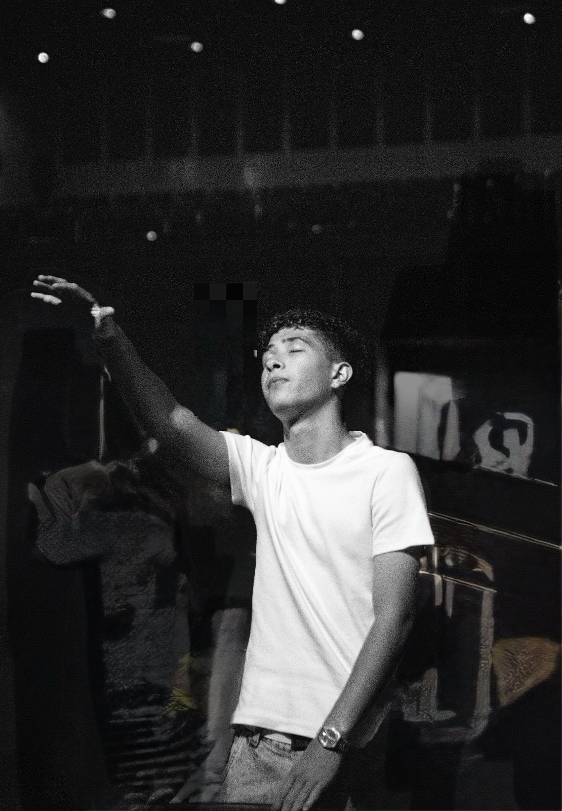
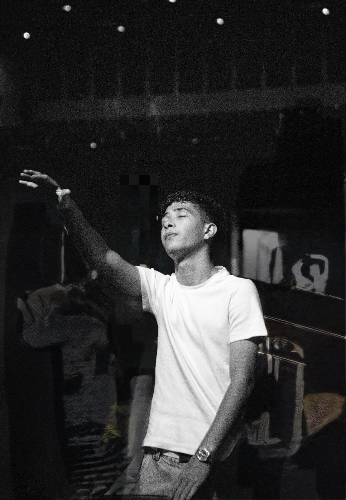

Galeria de Fotos
 


Eu sou estudante do IFPR e sempre busco dar o meu melhor nos estudos, porque meu sonho é entrar em uma boa faculdade. Além disso, gosto de ir à igreja, pois isso faz parte da minha vida e me traz paz. Nos meus momentos livres, valorizo muito passar tempo de qualidade com meus amigos, seja conversando, saindo ou simplesmente curtindo a companhia deles. Acho importante equilibrar estudos, fé e amizades para seguir crescendo e me preparando para o futuro.
